Yes, today looks good
See the best drying window at a glance.
Dry My Washing
Dry My Washing turns the weather forecast into a simple laundry decision: hang it out now, bring it in before rain, or expect to finish in the dryer.
Instead of scanning a full forecast, you get a clear drying window, next-rain timing, and a practical answer for the day in seconds.

See the best drying window at a glance.

Know when the outside window is too short.
Get a simple time to bring the washing in.
If you need help with Dry My Washing, want to report a bug, or have a suggestion for a future update, get in touch at nick@hyspecs.co.nz.
Helpful details include your device model, iOS version, location or nearest town, what the app showed, and what you expected instead.